About Me
As a Postdoctoral Research Associate with Prof. Eliot Fried in Mechanics and Materials Unit at Okinawa Institute of Science and Technology (OIST), our primary focus is on exploring the folding and mobility of unstretchable surfaces for deployable structures. In particular, we work on constructing Möbius and orientable bands from unstretchable helicoids. We are also working on finding the rheological properties of energy-minimization-driven shapes of virus particles. My work utilizes a blend of variational calculus, differential geometry, and computational modeling tools like MATLAB, Python, and C++. Please see the full CV current through 8/2023.
 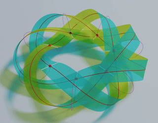
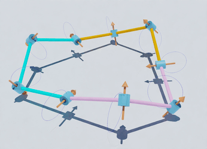
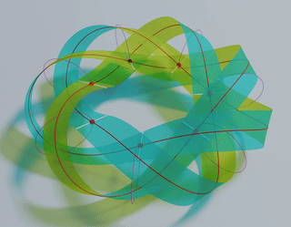
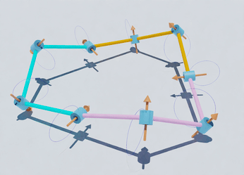
More about me
During my Ph.D. with Prof. Yi-Chao Chen at University of Houston, we developed a variational framework to study the equilibrium shape and stability of two charged elastic curves constrained to a surface. This framework was inspired by reverse cholesterol transport, wherein the high-density lipoproteins (HDL) particles constituted by charged Apo-lipoproteins attached to a spherical core are responsible for maintaining the cholesterol level in the human body. Additionally, we worked on the effect of surface tension imbalance on arbitrarily shaped floating bodies, unraveling the mechanism utilized by water-walking insects such as Rove beetles.
I received my Bachelors and Masters degrees in Mechanical
Engineering from IIT Kanpur. During my
master's, I worked on developing energy-preserving symplectic algorithms for discrete
Hamiltonian systems.
Broad research keywords encapsulating my interests include computational mechanics, biophysics, differential geometry, numerical methods, mathematical modeling, and the biomechanics of lipoproteins and viral dynamics. A more detailed description of my research interests can be found in my academic research statement (current
as of 1/2024).
Research
Below are some coarse categories containing my work:
Folding and mobility of bands and linkages
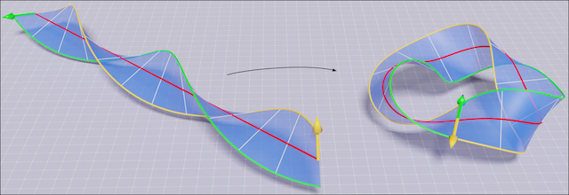 Research on folding unstretchable materials is crucial, finding applications in wearable technologies for creating adaptable and comfortable smart textiles, and in aerospace for designing reliable deployable structures . Inspired by origami, this field has led to innovative solutions such as foldable emergency shelters and medical devices that navigate the human body's complexities. Additionally, it plays a significant role in creating soft robots that adapt to the surrounding environment and mimic biological flexibility . These diverse applications showcase the practical relevance of this research and its potential to industries.
Projects
Stable Möbius bands from isometrically deformed helicoids Link
Abstract: We consider the problem of producing a ruled
Möbius band by subjecting an unstretchable material surface in a circular helicoidal
reference configuration to a deformation that is isometric and chirality preserving. We find
that such a Möbius band is completely determined by the unit binormal of the Frenet frame of
its midline, which must be a geodesic and must have constant torsion inversely proportional
to the pitch of the helicoidal reference configuration.
For a material surface that is characterized by an energy density which depends
quadratically on the mean curvature of its deformed configuration, we show that the total
energy stored in producing a Möbius band as described reduces to an integral over the
midline of the Möbius band.
We formulate and numerically solve a constrained variational problem for finding relative
minima of the dimensionally reduced bending energy and constructing corresponding stable
Möbius bands. The only input parameter entering our variational problem is the number
ν of turns of a referential helicoid. We do not obtain a solution to our problem
unless ν exceeds a certain threshold, which we compute to machine precision.
Above that threshold, an interplay between the operative constraint leads to a multiplicity
of coexisting stable solutions with n ≥ 3 half twists. For each n ≥ 3,
we construct an energetically optimal Möbius band which exhibits n-fold rotational
symmetry. All other energy minima yield Möbius bands with broken symmetry.
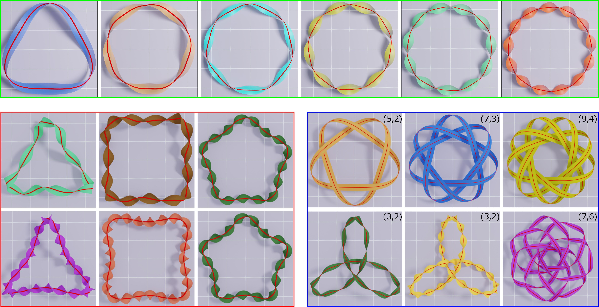
Key finding: Our study provides a guideline to design reference helicoid
templates which can be folded, without stretching or contraction, into Möbius bands
with given n half twists and n-fold rotational symmetry (optimal
symmetry). The pitch of the reference helicoid of axis length ℓ which can be
folded into an optimal band with n half twists is given by
\[ p = \frac{n}{2\ell} - \frac{2}{\pi\ell}\sin^{-1}\frac{1}{n}, \qquad n= 3, 5, 7,\dots . \]
The optimal bands with n = 3, 5,7,9,11, and 13 half twists are show in the
top-panel of the above figure.
These unique bands have minimal ring strains desired in synthesizing ring compounds such as
Möbius
annulenes and DNA origami.
(Joint with Prof. Eliot Fried. )
Everting motion of Möbius and orientable binormal scrolls Under construction
Abstract: Eversion, traditionally explored in the
context of simple structures like spheres and cylinders, takes a leap forward in this study,
which extends the concept to more complex geometries. We introduce a novel method for the
continuous, isometric, and iso-energetic eversion of Möbius and orientable binormal
scrolls with midlines of uniform torsion. Our approach, rooted in a kinematically consistent
time-evolution equation, ensures a seamless transformation that preserves both geometry and
energy throughout the eversion process. This methodology marks a notable advancement from
previous studies that limited their focus to the initial and final states of eversion. By
capturing the intermediate stages, our research provides a comprehensive understanding of
the eversion dynamics in these intricate structures. The analytical solution derived here
not only offers a closed-form expression for the everting motion but also paves the way for
practical applications. These include the development of adaptive materials and soft robotic
systems with dynamically tunable properties, as well as innovations in medical, aerospace,
and architectural engineering. Bridging theoretical concepts with real-world applications,
our work presents a paradigm shift in eversion research, opening a new realm of
possibilities across a diverse array of scientific and engineering disciplines.
Please see the everting motion of Möbius
bands and Orientable bands using our framework.
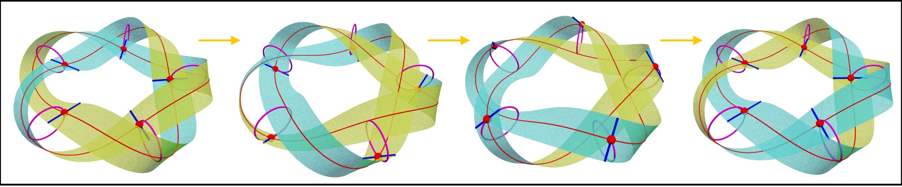
Four representative states of the everting motion of a (5,2) knotted Möbius band.
(Joint with Prof. Eliot Fried. )
Biophysics
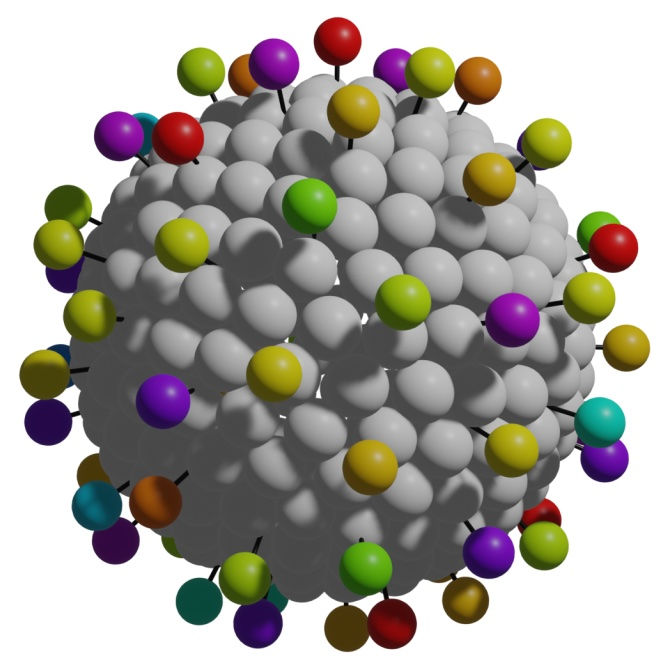 Be it the engulfing of foreign particles during endocytosis, expansion of ion channels in neurons for passing of ions, or the repulsive interaction between apolipoproteins in high-density cholesterol molecules, the competition between the electrostatic interactions, elastic energies, and geometric constraints are prevalent in nature. Understanding the equilibrium and non-equilibrium shapes that emerge from such competitions is crucial in understanding biological phenomena, cell shaping, curvature sorting, or topological changes. Below is a summary of our work in this direction:
Projects
Reverse cholesterol transport
High-density lipoprotein (HDL) particles, crucial for transporting cholesterol to the liver, comprise a spherical core with charged Apo-I and Apo-II protein loops attached to its surface. These proteins' shapes are vital for HDL functionality. My Ph.D. research studied the equilibrium shapes of charged, elastic curves confined to spherical surfaces. I explored the balance between elastic energy, favoring circular shapes, and electrostatic repulsion, pushing these curves apart. This interplay leads to complex equilibrium shapes in the proteins, offering insights into the structural principles of HDL particles.Interacting elastic loops on a sphere Link
Abstract:
A variational approach is used to study the behavior of two closed, inextensible,
interacting elastic loops that are constrained to lie on a sphere. In addition to the
bending energy of each loop, the total potential energy of the system includes nonlocal
contributions that account for intraloop and interloop interactions. Euler--Lagrange
equations and energy based stability condition are derived in a coordinate-free setting
using the first and second variation of the potential energy functional. As an illustrative
application, a problem in which all the interaction potentials are Coulombic and both loops
possess the same length, bending rigidity, and positive charge density is considered.
To ensure existence of a trivial solution in which the loops are parallel and circular, the
length of the loops are taken to be smaller than perimeter of the great circle of the
sphere. Detailed bifurcation and linear stability analyses of the trivial solution are
conducted. The stability of the trivial solution is governed by three dimensionless
parameters a, ζ, and χ, where a is the ratio
between the radius of the loops to radius of the sphere and where ζ and
χ encompass information about the ratio of intraloop interaction and interloop
interaction to the bending rigidity.
While the bending energy and the intraloop interaction energy stabilize the trivial
solution, the interloop interaction has a destabilizing influence. Moreover, a cross-over
phenomenon associated with the nature of the most destabilizing mode is discovered: for
0 < a < ac, the number of modes represented in the most
destabilizing modes varies with ζ and χ; for ac
< a < 1, the most destabilizing mode is always the lowest mode in keeping
with results for problems involving only bending energy.
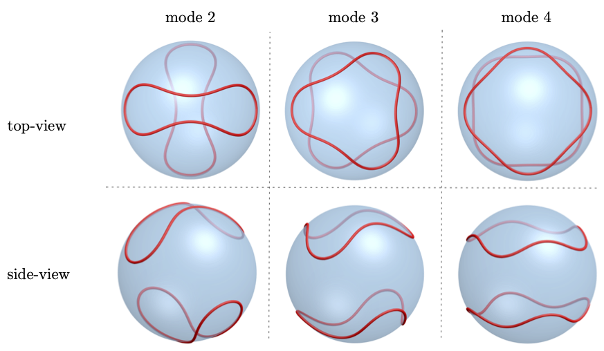
A few possible arrangements of charged curves, shown with red color, on a rigid sphere are shown in the figure above.
While the curves represent the Apo-lipoproteins, the rigid sphere models the core of
high-density lipoprotein particles.
Key findings: For the given charge, length, and bending rigidity of the
proteins, our
framework yields the precise equilibrium shape of the proteins confined to a core. We
provide a detailed stability analysis of the circular configuration of the proteins.
Depending
on the parameters, the first unstable mode could be 1, 2, 3, and so on.
(Joint with Prof. Eliot Fried and Prof. Yi-Chao Chen.)
Virus modeling via energy minimization
Our research focuses on understanding the rheological properties of viruses, mainly how their shapes influence behavior and interactions in the human body. We use energy minimization techniques to determine viral shapes and their rheological properties. This approach has yielded insights into the functionality and hydrodynamic behavior of viruses. Notably, our work on COVID-19 has shown the significant impact of spike protein geometry, core shape, and charge distribution on its rheological properties, underscoring the importance of spike proteins in viral behavior. Looking ahead, we aim to extend our research to a broader range of viruses. Our published articles on this topic can be found below.CORONAVIRUS PEPLOMER CHARGE HETEROGENEITY Link
Abstract: Recent advancements in viral hydrodynamics afford the calculation of the transport properties of particle suspensions from first principles, namely, from the detailed particle shapes. For coronavirus suspensions, for example, the shape can be approximated by beading (i) the spherical capsid and (ii) the radially protruding peplomers. General rigid bead-rod theory allows us to assign Stokesian hydrodynamics to each bead. Thus, viral hydrodynamics yields the suspension rotational diffusivity, but not without first arriving at a configuration for the cationic peplomers. Prior work considered identical peplomers charged identically. However, a recent pioneering experiment uncovers remarkable peplomer size and charge heterogeneities. In this work, we use energy minimization to arrange the spikes, charged heterogeneously to obtain the coronavirus spike configuration required for its viral hydrodynamics. For this, we use the measured charge heterogeneity. We consider 20,000 randomly generated possibilities for cationic peplomers with formal charges ranging from 30 to 55. We find the configurations from energy minimization of all of these possibilities to be nearly spherically symmetric, all slightly oblate, and we report the corresponding breadth of the dimensionless rotational diffusivity, the transport property around which coronavirus cell attachment revolves.
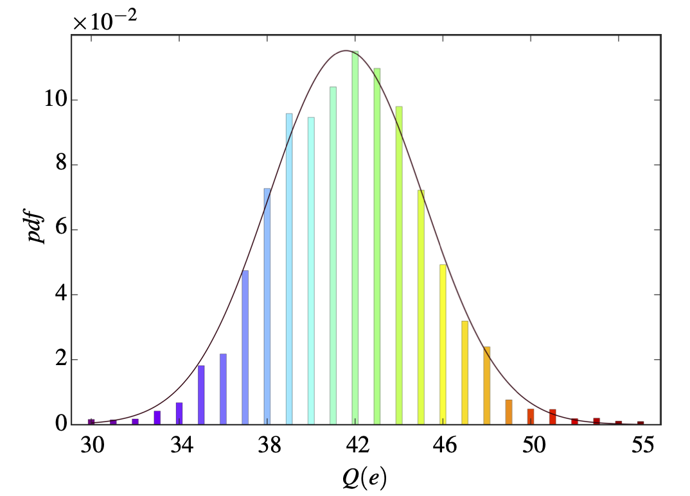
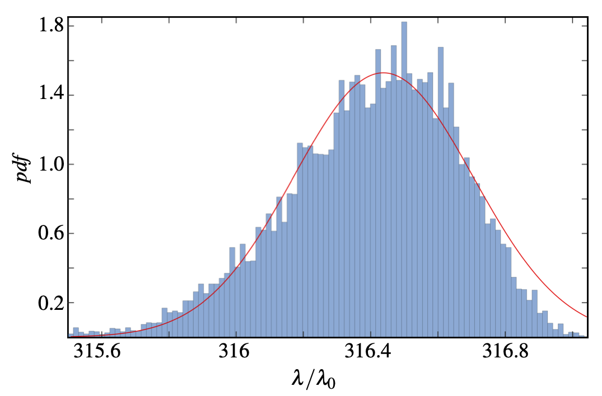
Left: probability distribution function (pdf) of the charges on the Covid-19 spike proteins. Right: pdf of the relaxation-time of the Covid-19 particles. As shown, the charge heterogeneity of the spike proteins leads to a pdf of the relaxation-time.
(Joint with Prof. Eliot Fried, Mona Kanso, and Prof. A.J. Giacomin.)
Coronavirus pleomorphism Link
Abstract: The coronavirus is always idealized as a spherical capsid with radially protruding spikes. However, histologically, in the tissues of infected patients, capsids in cross section are elliptical, and only sometimes spherical [Neuman et al., “Supramolecular architecture of severe acute respiratory syndrome coronavirus revealed by electron cryomicroscopy,” J Virol, 80, 7918 (2006)]. This capsid ellipticity implies that coronaviruses are oblate or prolate or both. We call this diversity of shapes, pleomorphism. Recently, the rotational diffusivity of the spherical coronavirus in suspension was calculated, from first principles, using general rigid bead-rod theory [Kanso et al., “Coronavirus rotational diffusivity,” Phys Fluids 32, 113101 (2020)]. We did so by beading the spherical capsid and then also by replacing each of its bulbous spikes with a single bead. In this paper, we use energy minimization for the spreading of the spikes, charged identically, over the oblate or prolate capsids. We use general rigid bead-rod theory to explore the role of such coronavirus cross-sectional ellipticity on its rotational diffusivity, the transport property around which its cell attachment revolves. We learn that coronavirus ellipticity drastically decreases its rotational diffusivity, be it oblate or prolate.
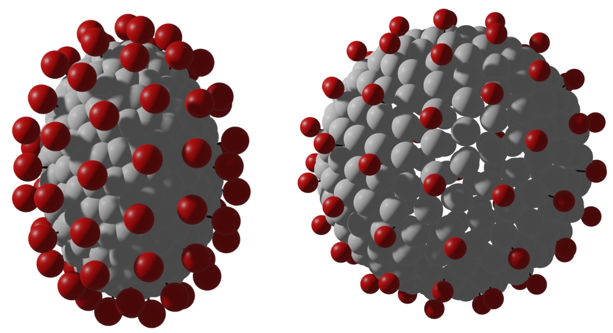
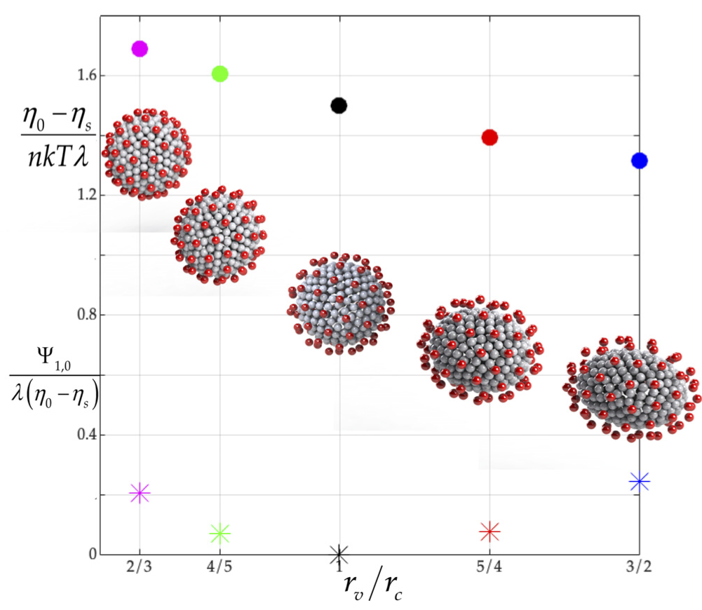
Left: Oblate and prolate cores of Covid-19 particles. Right: Shear viscosity of ellipsoidal core covid particles relative to the spherical core. As shown, the sphericity of the core affects its viscosity.
(Joint with Prof. Eliot Fried, Mona Kanso, and Prof. A.J. Giacomin.)
Peplomer bulb shape and coronavirus rotational diffusivity Link
Abstract: Recently, the rotational diffusivity of the coronavirus particle in suspension was calculated, from first principles, using general rigid bead-rod theory [M. A. Kanso, Phys. Fluids 32, 113101 (2020)]. We did so by beading the capsid and then also by replacing each of its bulbous spikes with a single bead. However, each coronavirus spike is a glycoprotein trimer, and each spike bulb is triangular. In this work, we replace each bulbous coronavirus spike with a bead triplet, where each bead of the triplet is charged identically. This paper, thus, explores the role of bulb triangularity on the rotational diffusivity, an effect not previously considered. We thus use energy minimization for the spreading of triangular bulbs over the spherical capsid. The latter both translates and twists the coronavirus spikes relative to one another, and we then next arrive at the rotational diffusivity of the coronavirus particle in suspension, from first principles. We learn that the triangularity of the coronavirus spike bulb decreases its rotational diffusivity. For a typical peplomer population of 74, bulb triangularity decreases the rotational diffusivity by 1/3.
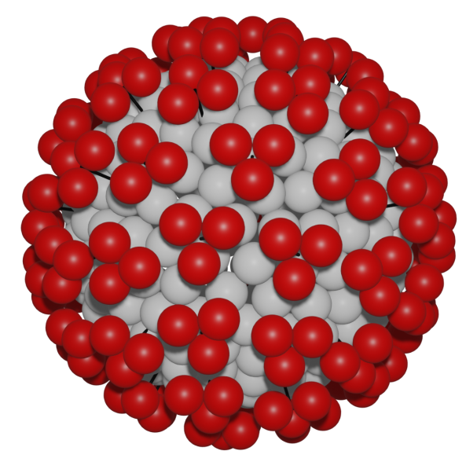
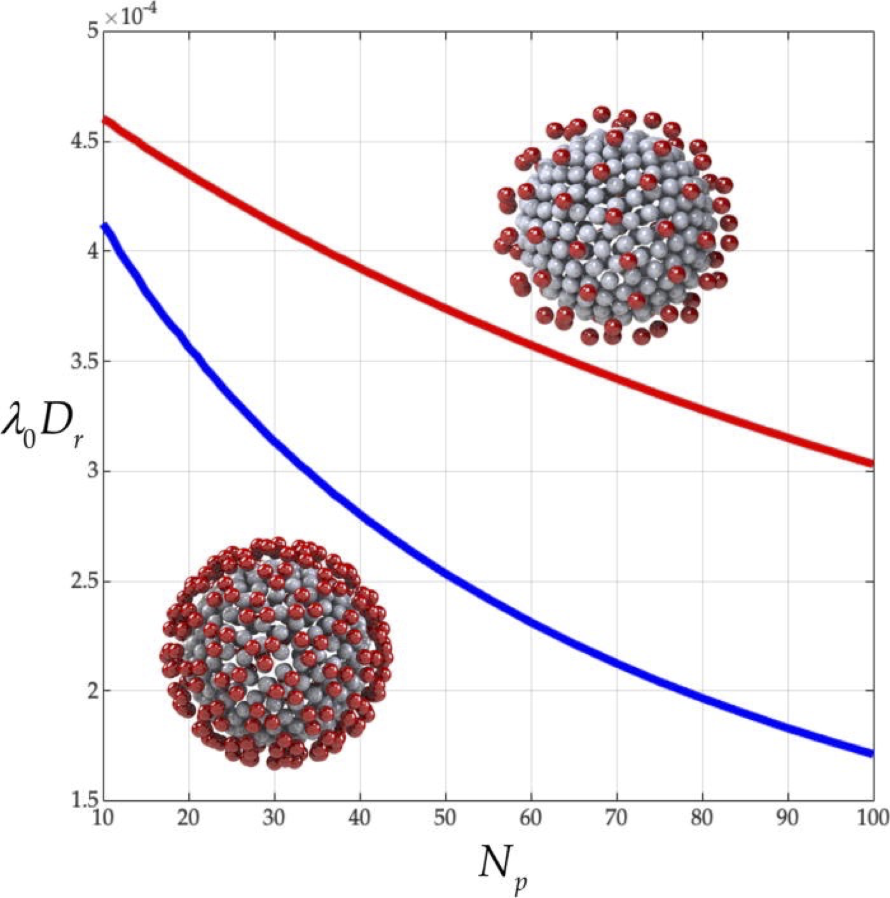
Left: Triangular spike proteins of Covid-19 particles. Right: Dimensionless rotational diffusivity of covid particles with triangular proteins relative to single-bead shape. As shown, the triangularity of spike proteins decrease the rotational diffusivity of covid particles.
(Joint with Prof. Eliot Fried, Mona Kanso, and Prof. A.J. Giacomin.)
Surface tension mediated shape changes
Surface tension, a critical interfacial phenomenon, significantly influences natural and engineered systems. Its role extends beyond shaping films and liquid interfaces; it is crucial in phenomena like Marangoni propulsion, observed in water-walking insects such as the rove beetle (Stenus comma). Our published articles on this topic can be found below.Effect of a surface tension imbalance on a partly submerged cylinder Link
Abstract:
We perform a static analysis of a circular cylinder that forms a barrier between surfactant-laden and surfactant-free portions of a liquid-gas interface. In addition to determining the general implications of the balances for forces and torques, we quantify how the imbalance Δγ = γa - γb between the uniform surface tension γa of the surfactant-free portion of the interface and the uniform surface tension γb of the surfactant-laden portion of the interface influences the load-bearing capacity of a hydrophobic cylinder.
Moreover, we demonstrate that the difference between surface tensions on either side of a cylinder with a cross-section of arbitrary shape induces a horizontal force component fh equal to Δ γ in magnitude, when measured per unit length of the cylinder. With an energetic argument, we show that this relation also applies to a rod-like barrier with cross-sections of variable shape. In addition, we apply our analysis to amphiphilic Janus cylinders and we discuss practical implications of our findings for Marangoni propulsion and surface pressure measurements.
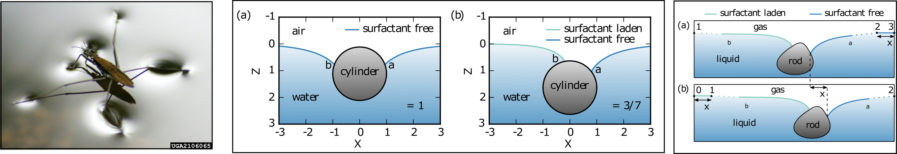
Left: picture of a rove beetle showing deformation of the water surface around its legs. Center: effect of surface tension imbalance on a floating cylinder. Right: generalization of our model to arbitrary shaped floating objects.
(Joint with Prof. Eliot Fried and S. D. Janssens (lead author).